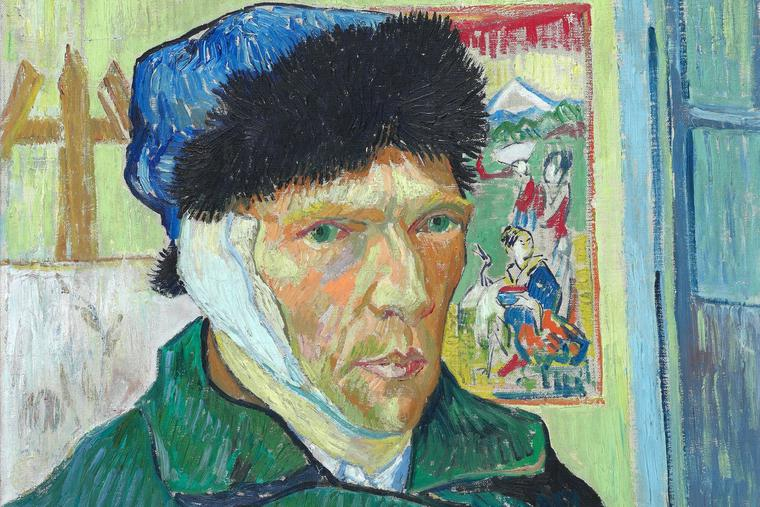

Vincent Van Gogh
Home
About
More
Paintings
Interesting Facts
Contact Us
Interestng Facts

1. He painted almost 900 paintings in 10 years
2. Van Gogh’s staples were coffee, cigarettes and bread
3. He was nicknamed ‘The Redheaded Madman’
4. ‘Starry Night’ was created in an ‘asylum’
5. Van Gogh was a pioneer of the post-impressionistic selfie